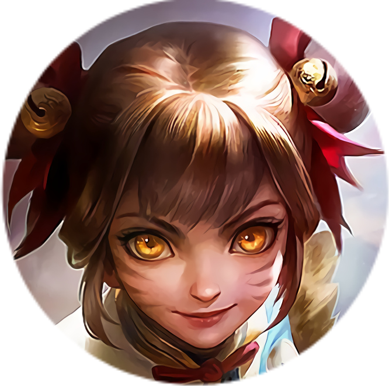

Conheça alguns personagens do Mobile
Legends: Bang Bang
Como foi dito anteriormente, o Mobile Legends possui cinco funções que devem ser preenchidas, e para que as composições não sejam sempre as mesmas, há vários personagens para se escolher, cada um com sua função específica, tornando a partida ainda mais divertida.
Logo abaixo vou listar 6 personagens que podem ser utilizados em alguma das 5 funções do jogo. Clique sobre algum deles.
- 
- >
Herói: Ling classe: Assassino
Passiva - Caminhada da Nuvem: A excelente habilidade de Leveza de Ling permite que ele salte entre paredes e assassine inimigos por cima.
1ª Habilidade - Postura do Passáro: Ling lança seu Qinggong (Habilidade de Leveza), saltando para a parede escolhida e entrando no estado de Camuflagem. Ele pode saltar entre as paredes livremente, sem TR.
2ª Habilidade - Espada Desafiadora: Ling avança em uma direção designada e apunhala os inimigos próximos, causando Dano. A apunhalada será identificada como um Ataque Básico com Chance de Crítico adicional. Lançar esta Habilidade de uma parede causará aos inimigos uma redução da Velocidade de Movimento ao causar dano crítico.
Ultimate - Tempestade de Lâminas: Ling salta no ar, ficando invencível, e em seguida pousa no solo, jogando os inimigos no centro da área para o ar. Quatro Lâminas da Tempestade também irão aparecer no campo ao seu redor. Ling pode tocar nelas para reduzir o Tempo de Recarga da Postura do Pássaro por 4s e resetar o Tempo de Recarga da Espada Desafiadora.
Herói: Yu Zhong classe: Soldado
Passiva - Toque Amaldiçoado: Yu Zhong aplica Resíduo Infame ao alvo toda vez que ele causa dano a inimigos. O Resíduo Infame entra em erupção ao atingir 5 acúmulos, causando uma grande quantidade de dano ao inimigo e restaurando HP. Quando a Essência Infame está totalmente carregada, Yu Zhong ganha velocidade de movimento e vampirismo.
1ª Habilidade - Cauda do Dragão: Yu Zhong gira seu manto para causar dano aos inimigos próximos. A ponta afiada causa mais dano e aplica 2 acúmulos de Resíduo Infame.
2ª Habilidade - Aperto da Alma: Yu Zhong libera a Alma do Dragão para causar dano e lentidão no inimigo à frente. Ao atingir o alvo, o próximo Ataque Básico de Yu Zhong será aprimorado, causando dano aumentado e aplicando um número maior de acúmulos de Resíduo Infame de acordo com o número de alvos atingidos.
3ª Habilidade - Mergulho Furioso: Yu Zhong salta em direção à área designada, causando dano. Depois disso, ele será capaz de avançar mais uma vez. Após um breve instante, ele irá arremessar ao ar os inimigos por 1s dentro da área e causará dano adicional.
Ultimate - Forma do Dragão Negro: Yu Zhong se transforma em Dragão Negro e começa a carregar por 7s, ganhando Imunidade a Controle, lgnorando obstáculos e aumentando seu HP máximo. Depois ele entra na Forma Dragonóide por 10s, aprimorando o alcance de todas as suas habilidades.
Heroína: Wanwan classe: Atirador
Passiva - Dança do Tigre: Wanwan pode se mover a uma curta distância quando ela joga um Dardo na Manga. Ela pode também causar dano adicional atingindo os pontos vitais do alvo.
1ª Habilidade - Andorinha Flamejante: Wanwan lança a Andorinha Flamejante em uma direção designada e pode recuperar até 3 Flechas de Andorinha na duração da habilidade. Inimigos atingidos duas vezes pelas Flechas da Andorinha serão atordoados.
2ª Habilidade - Agulhas em Flores: Wanwan remove imediatamente todos os Controles de Grupo de si e dispara agulhas mortais aos inimigos próximos.
Ultimate - Besta Tang: Wanwan dispara flechas por alguns segundos nos inimigos que foram atingidos em todos os Pontos Vitais. Eliminar inimigos concede a Wanwan um tempo de uso extra, de sua besta.
Heroína: Pharsa classe: Mago
Passiva - Unidade Espiritual: A cada vez por um determinado tempo, Verri entra no estado de caça e, na próxima vez que Pharsa atacar um herói inimigo, Verri causará dano adicional e lentidão ao alvo.
1ª Habilidade - Maldição do Corvo: Pharsa causa dano aos inimigos na área alvo e os marca. Suas outras habilidades e seu ataque básico podem atordoar os inimigos marcados.
2ª Habilidade - Impacto Poderoso: Pharsa libera energia mágica na direção do alvo, causando dano.
Ultimate - Ataque Áereo: Pharsa voa e lança ataques aéreos na área alvo.
4ª Habilidade - Asas por Asas: Pharsa se transforma em uma névoa ao redor de Verri, sobrevoando o terreno.

Herói: Tigreal classe: Tank
Passiva - Destemido: Tigreal fica imune quando recebe ataque básico após utilizar habilidades ou ao ser atingido por ataques básicos muitas vezes seguidas.
1ª Habilidade - Onda de Ataque: Tigreal bate no chão com o martelo que gera uma onda de ataque na direção designada, causando dano e diminuindo a velocidade de movimento dos inimigos.
2ª Habilidade - Martelo Sagrado: Tigreal empurra os inimigos na direção designada, causando dano aos inimigos no caminho. Ao apertar a habilidade novamente, Tigreal joga os inimigos para o ar.
Ultimate - Implosão: Tigreal reune força, puxa os inimigos ao redor dele para si, causa dano e os atordoa.
Heroína: Angela classe: Suporte
Passiva - Coração Inteligente: Cada vez que a Angela usa uma habilidade, sua velocidade de movimento aumenta. Quem estiver conectado a ela também se beneficia do bônus de movimento.
1ª Habilidade - Ondas de Amor: Angela libera a Energia do Amor em uma direção alvo, causando dano aos inimigos e/ou curando aliados.
2ª Habilidade - Marionete em uma Corda: Angela lança uma corda de marionete em um alvo escolhido, causando efeito de lentidão e imobilizando o alvo gradualmente.
Ultimate - Guarda do Coração: Angela gera um escudo para qualquer aliado escolhido no mapa. Após um tempo, ela será conectada ao aliado. Durante o Estado De Conexão, ela pode usar todas as suas habilidades. Se essa habilidade for usada novamente durante a conexão, ela será retirada do aliado.